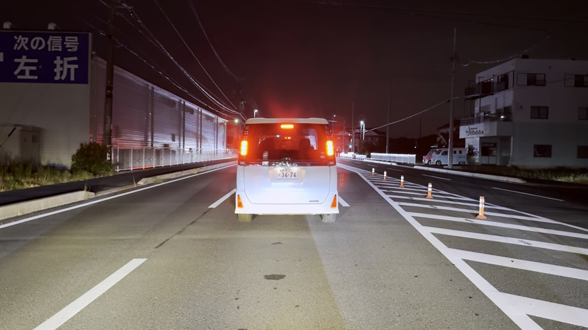
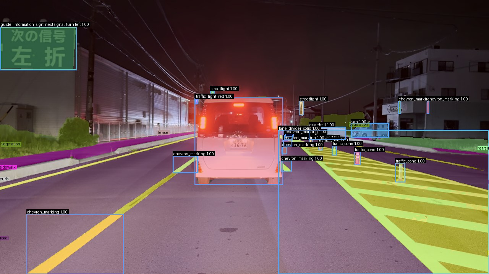

Code
Pipeline
Frame sampling, scene understanding, ontology, grounding, masks, surfaces, export and student training.
A worldwide, multilingual traffic-scene dataset built from CROWD dashcam frames in 238 countries: road users and vehicles, the road surface and its markings, each traffic light's state, and each sign's text in its own script with its language and English meaning. Every annotation is COCO-compatible.


Night in Aichi. The green guide sign is read as 次の信号 左折, Japanese, “next signal: turn left”; the chevron hatching, cones and the red light ahead are labelled too.
Existing datasets cover one or a few countries in detail, like Cityscapes, KITTI, BDD100K and nuScenes, or many countries with a fixed label set and no sign text, like Mapillary Vistas. Three things are missing at scale.
Every dot is a CROWD place, sized by its hours of footage. One frame every 20 seconds of it gives the pool TraffCOCO samples from, stratified by continent, country, day and night, and the vehicle carrying the camera.
The scene model reads each sign's exact text in its original script and names its language and English meaning, so a written sign is labelled by what it says, not only by its shape.
{
"category_id": 7,
"bbox": [0, 70, 200, 114],
"area": 22029,
"segmentation": {"size": [720, 1280], "counts": [...]},
"scene_confidence": 1.0, "ontology_score": 0.67, "sam_score": 0.98,
"attributes": {"text": "次の信号 左折", "language": "Japanese", "meaning": "next signal: turn left"},
"alternative_labels": ["parking_sign"]
}Each class carries a description, the colours, shapes and text it usually has, what it is confused with, and the prompt used to find it in a frame. Country-specific signs sit next to global ones, from Ampelmann signals to Belisha beacons and tsunami evacuation signs.
Traffic signs make up more than a third.
Classes that belong to a country or region, rather than the whole world.
With the description and the grounding prompt of each.
Each frame passes a chain of open foundation models. Slow and careful by design: its labels train a fast student model that labels the rest.
Every box the teacher drew was judged by eye: on the six example frames, and on 100 frames cut at random times from CROWD videos in 38 countries. A small pilot sample, not a benchmark, but it shows where the teacher is strong and where it is not yet.
60 of 69 decidable boxes correct; 76% before the mask and conflict checks
543 of 779 decidable boxes correct; 179 visible objects got no box
100 random frames. Road users and vehicles are reliable; signs and markings are the hard part.
Night frames were no worse than day frames.
Every box in each frame, by verdict.
Share of correct boxes on the ten worst frames for each cause, before and after. On the frames where the scene model looped, a follow-up question raised the correct boxes from 30 to 72.
The teacher labels a stratified sample, people check it, a student learns from it, and the student labels the rest under the same quality checks.
The pipeline labels 2 to 3 million frames, stratified by continent, country, day and night and vehicle.
Objects, masks, surfaces, lights, sign textA hand-labelled gold set measures the teacher's precision and recall per class and calibrates its scores.
Label quality per class and regionYOLO26 detectors and segmenters learn from the teacher; their least certain frames go back for relabelling.
Models that label a frame in millisecondsThe best student labels the remaining frames, checked on a held-out sample.
TraffCOCO, about 17 million framesTasks, baselines and splits, with the labels, code and models.
Dataset, leaderboard, baselinesPlanned for the release.
Assigned by hashing the video ID, so frames of one drive never sit on both sides of a split.
The full chain runs end to end on an NVIDIA DGX Spark. These are the known issues the quality phase has to measure and fix.
Open source under the MIT License.
Frame sampling, scene understanding, ontology, grounding, masks, surfaces, export and student training.
All 414 classes with descriptions, visual cues, confusions and grounding prompts.
Choose places, vehicles and time of day, and download matching CROWD frames from the file server.